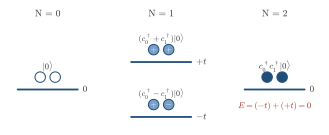

Advanced Quantum Materials 2027 · All lectures · Lecture notes
Session 1. Second Quantization, Mean-Field, and Spontaneous Symmetry Breaking
1.5 A warm-up in first quantization, and the puzzle that breaks it
Let us take the simplest single-particle system, which is a lattice of sites with one level each and one electron, that forms a finite island such as a quantum dot. Without many-body interactions this is an ordinary diagonalization problem, in the same way as a particle in a box, with a lowest energy state, a first excited state and so on. In this language, “one electron in the ground level” and “one electron in the first excited level” are two different single-particle states, and we can also take superpositions of the two. In every case, however, there is exactly one electron in the system.
Now let us say that we want to describe a quantum dot in a coherent superposition of zero electrons and two electrons, each with 50% probability. We cannot write this as an ordinary wave function, because a wave function needs a fixed number of coordinates, and it makes no sense to have zero coordinates and two coordinates “at the same time.” This example is not artificial. This kind of reasoning, about a number of electrons that fluctuates, is what allows us to understand how local magnetic moments couple to each other in real oxides, which is the basis of the Goodenough-Kanamori rules that predict ferromagnetism or antiferromagnetism. It is also part of the definition of a superconductor, whose mean-field order parameter conserves only the parity of the electron number and not the number itself. This description of superconductors, which does not conserve the number of particles, has its own name, the Bogoliubov-de Gennes formalism. The slides introduce it here, but we will only use it in practice when we reach the session on superconductivity.
1.6 Building second quantization with creation and annihilation operators
To describe systems of this kind we introduce two operators at every site \(i\). The first one is the annihilation operator \(c_i\), which destroys an electron at site \(i\), and the second one is the creation operator \(c_i^\dagger\), which creates one. The Hamiltonian, and all the dynamics of the system, is written only in terms of these operators.
We define the vacuum state, which is the empty state \(|0\rangle\), by
\[c_i|0\rangle = 0 \quad \text{for every site } i. \tag{1.1}\]
A hopping term between two sites, which describes an electron that can jump between sites 0 and 1, is then written as
\[H_\text{hop} = t\left(c_0^\dagger c_1 + c_1^\dagger c_0\right), \tag{1.2}\]
and we read it as “destroy an electron at 1 and create one at 0” plus the reverse process. If we start from the vacuum and apply creation operators, we obtain all the states of the two-site system. These are \(|0\rangle\), then \(c_0^\dagger|0\rangle\) with one electron at site 0, then \(c_1^\dagger|0\rangle\) with one electron at site 1, and finally \(c_0^\dagger c_1^\dagger|0\rangle\) with both sites occupied. Schematic 1.3 lists these four states with their energies.

Both sites are occupied, and the state is \(c_0^\dagger c_1^\dagger|0\rangle\). What is its energy for the hopping of (1.2)?
Show the answer
The correct option is A.
The hopping needs an empty site to move an electron to, and none is empty here, so \(H_\text{hop}\) gives zero on this state. We get the same result by adding the two levels, \((-t)+(+t)=0\).
Notebook check-in: session1.ipynb, “The spectra of a dimer” (Core)
Build this two-site system and diagonalize it. Check that the Fock states above give the same spectrum that you would obtain from an ordinary two-level treatment in first quantization, before we add any interactions.
Try it. Run the cell and count the eigenvalues of the dimer with spin. Set has_spin=False and check that two remain, at \(-t\) and \(+t\). These are the levels of the column with one electron in the figure above.
1.7 Enforcing fermionic statistics
Up to now nothing distinguishes fermions from bosons, and everything above applies to both in the same way. The difference is introduced through the algebra of the operators. Fermi statistics requires that the many-body wave function changes sign when we exchange two particles, and a direct consequence is that a given single-particle level can have zero fermions or one fermion, but never two. We impose this with anticommutation relations,
\[\{c_i, c_j^\dagger\} = \delta_{ij}, \qquad \{c_i, c_j\} = \{c_i^\dagger, c_j^\dagger\} = 0. \tag{1.3}\]
The second relation is the important one. If we take \(i=j\) it gives \((c_i^\dagger)^2 = 0\), which means that we cannot create two electrons in the same level. At the same time it imposes the antisymmetry of the wave function, so the Pauli exclusion principle is part of the algebra itself and we do not need to add it by hand.
Suppose \(c_i^\dagger\) and \(c_j^\dagger\) commuted instead of anticommuting. What would change?
Show the answer
The correct option is A.
The statement \((c_i^\dagger)^2=0\) follows only from the anticommutation relation. Without it nothing stops a second particle from entering the same level, and we would describe bosons.